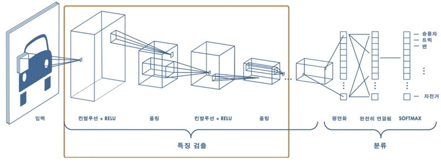
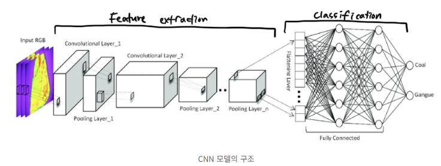
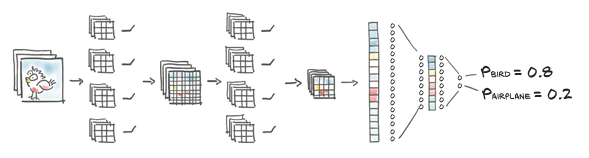
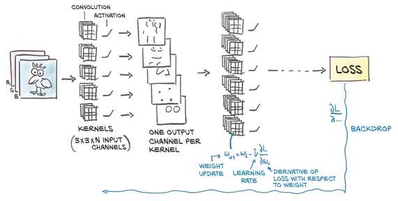
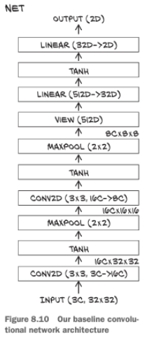

%matplotlib inline
from matplotlib import pyplot as plt
import numpy as np
import collections
import torch
import torch.nn as nn
import torch.nn.functional as F
import torch.optim as optim
torch.set_printoptions(edgeitems=2)
torch.manual_seed(123)
class_names = ['airplane','automobile','bird','cat','deer',
'dog','frog','horse','ship','truck']
from torchvision import datasets, transforms
data_path = '../data-unversioned/p1ch6/'
cifar10 = datasets.CIFAR10(
data_path, train=True, download=True,
transform=transforms.Compose([
transforms.ToTensor(), # 토텐서 변환
transforms.Normalize((0.4915, 0.4823, 0.4468), # 평균과 표준편차를 가지고 정규화
(0.2470, 0.2435, 0.2616))
]))
cifar10_val = datasets.CIFAR10(
data_path, train=False, download=True,
transform=transforms.Compose([
transforms.ToTensor(),
transforms.Normalize((0.4915, 0.4823, 0.4468),
(0.2470, 0.2435, 0.2616))
]))
label_map = {0: 0, 2: 1}
class_names = ['airplane', 'bird']
cifar2 = [(img, label_map[label])
for img, label in cifar10
if label in [0, 2]]
cifar2_val = [(img, label_map[label])
for img, label in cifar10_val
if label in [0, 2]]- 출력 채널은 입력 이미지의 다양한 특징이나 패턴을 감지하는 역할을 합니다.
컨볼루션 레이어의 출력 채널은 입력 이미지에서 다양한 특징이나 패턴을 자동으로 감지하는 역할을 합니다. 이러한 특징은 커널(필터)에 의해 학습되며, 각 출력 채널은 입력 이미지의 서로 다른 부분이나 특징에 대응합니다.
컨볼루션 레이어의 각 출력 채널은 입력 이미지에서 특정한 특징을 감지하는데 특화되어 있습니다. 예를 들어, 첫 번째 출력 채널은 에지(edge)를 감지하거나 특정한 색상에 반응할 수 있고, 두 번째 출력 채널은 다른 모양이나 질감에 반응할 수 있습니다. 이렇게 다양한 특징을 학습하여 모델은 입력 이미지의 복잡한 구조를 이해하고 인식할 수 있습니다.
따라서, 출력 채널의 역할은 모델이 입력 이미지의 다양한 특징을 자동으로 학습하고 추출하는 것이며, 이는 모델이 더 높은 수준의 추상화를 수행할 수 있게 해줍니다.



- 아래의 그림은 두번의 컨볼루션을 수행한 그림이다
nn.Conv2d(3,5,kernel_size=3,padding=1) # 3(RGB)개의 채널을 5개의 채널로
nn.Conv2d(5,6,kernel_size=3,padding=1) # 5개의 채널을 6개의 채널로중간에 활성함수 처리를 하는것을 확인할 수 있고 당연히 일반적인 모델에는 풀링 과정도 포함된다


3개의 채널(RGB)을 입력을 받고 각각 채널에 3개의 커널에 따라 컨볼루션이 이뤄진 다음 픽셀마다 R+G+B 을 더해서 하나의 이미지, 즉 하나의 채널로 변환되게된다
- conv = nn.Conv2d( 3, 1, kernel_size=3, padding=1 )을 통해 직접 구조를 확인함
- weight 텐서의 차원 정보를 정확하게 본다면 kernel size * in_ch * out_ch = 3 * 3 * 3(RGB) * 16(out_ch)
- 또한 한 채널이 생성될때 RGB 값의 합에 bias도 더하게 된다, bias는 출력 채널당 하나씩 생성된다.
- 즉 출력채널은 원하는 만큼 생성이 가능하고 하나의 출력채널이 만들어질때는 입력채널마다 커널이 만들어지고 가중합이 이뤄진뒤 원하는 출력채널만큼 추가 차원이 생성된다
- 각 채널은 특징점을 포착하는 채널이라고 생각하면 쉽다. ex) 윤곽선, 색상 밝기, 눈코입 같은 특징점 등등
- 한 채널이 어떻게 생성되는지 원리를 깨닫는 것이 중요하다.
# 차원 확인하기
conv = nn.Conv2d(3,16,kernel_size=3,padding=1)
conv.weight.shape,conv.bias.shape(torch.Size([16, 3, 3, 3]), torch.Size([16]))img, _ = cifar2[0]
output = conv(img.unsqueeze(0))
img.unsqueeze(0).shape, output.shape # 이미지가 3개의 채널(RGB)에서 16개의 채널을 가진 이미지가 됐다(torch.Size([1, 3, 32, 32]), torch.Size([1, 16, 32, 32]))%matplotlib inline
from matplotlib import pyplot as plt
import numpy as np
import collections
import torch
import torch.nn as nn
import torch.nn.functional as F
import torch.optim as optimtorch.randn(1, 3, 4, 4)tensor([[[[ 1.9696, -1.5811, 0.0716, -1.4534],
[ 0.1258, 0.4273, -0.0132, 1.9150],
[-0.9203, 0.5278, -0.5618, 1.5934],
[ 0.1542, -0.8334, -0.3344, -2.4584]],
[[ 0.5048, -0.2681, -0.1297, -0.1383],
[ 0.5617, 0.9228, -1.1484, -1.0422],
[ 0.8868, -2.0447, 0.4945, 0.6213],
[ 0.7073, -0.5441, -2.0697, 0.9890]],
[[ 0.5626, 0.1718, 1.6276, 2.0309],
[ 2.2260, -0.4010, 0.8010, 0.0808],
[ 0.6796, -0.0162, -0.8013, 0.3638],
[ 0.9727, -0.7129, 1.1638, 0.1203]]]])torch.randint(1, 6, (1, 3, 4, 4))tensor([[[[3, 5, 1, 3],
[5, 3, 4, 2],
[1, 4, 3, 5],
[1, 2, 4, 4]],
[[5, 5, 2, 2],
[1, 3, 2, 1],
[2, 4, 5, 5],
[3, 4, 4, 5]],
[[5, 3, 1, 3],
[4, 5, 1, 3],
[5, 1, 4, 2],
[3, 3, 4, 5]]]])conv2 = nn.Conv2d(in_channels=3, out_channels=6, kernel_size=3, padding=1)
conv2.biasParameter containing:
tensor([ 0.1347, -0.1861, 0.1122, 0.1209, -0.1168, -0.1342],
requires_grad=True)int_image = torch.randint(-1, 2, (1, 3, 4, 4), dtype=torch.float32)
conv = nn.Conv2d(in_channels=3, out_channels=1, kernel_size=3, padding=1)
with torch.no_grad():
conv.bias.zero_()
# 정수 이미지에 합성곱 연산 적용
output_image = conv(int_image)
int_imagetensor([[[[ 0., 0., -1., 0.],
[-1., 0., 1., 0.],
[ 1., 0., 0., 1.],
[ 0., 0., 1., -1.]],
[[ 1., -1., 0., 1.],
[-1., -1., -1., -1.],
[ 1., -1., -1., 1.],
[ 1., 1., -1., 1.]],
[[ 0., 0., -1., 0.],
[ 0., -1., 1., 1.],
[ 0., 0., 1., -1.],
[ 0., 0., 0., 1.]]]])int_imagetensor([[[[ 0., 0., -1., 0.],
[-1., 0., 1., 0.],
[ 1., 0., 0., 1.],
[ 0., 0., 1., -1.]],
[[ 1., -1., 0., 1.],
[-1., -1., -1., -1.],
[ 1., -1., -1., 1.],
[ 1., 1., -1., 1.]],
[[ 0., 0., -1., 0.],
[ 0., -1., 1., 1.],
[ 0., 0., 1., -1.],
[ 0., 0., 0., 1.]]]])conv = nn.Conv2d(in_channels=3, out_channels=1, kernel_size=3, padding=1)
# 정수 이미지에 합성곱 연산 적용
output_image = conv(int_image)-0.1056+(0.1514-0.0390-0.0042+0.0301)+(-0.0353)-0.002599999999999991conv.weightParameter containing:
tensor([[[[-0.0065, -0.0099, 0.0652],
[ 0.1675, -0.0228, 0.1843],
[-0.1881, 0.1056, 0.1231]],
[[-0.1634, -0.0401, -0.1059],
[ 0.0799, 0.1514, 0.0390],
[-0.1749, 0.0042, -0.0301]],
[[-0.0027, -0.0447, -0.0565],
[ 0.1332, 0.1437, -0.1660],
[ 0.1791, -0.0053, 0.0353]]]], requires_grad=True)conv.biasParameter containing:
tensor([0.1157], requires_grad=True)output_imagetensor([[[[ 0.1131, 0.5787, 0.1112, 0.1227],
[ 0.3199, -0.8814, 0.0021, 0.7670],
[ 0.3917, 0.3587, 0.4272, 0.1836],
[ 0.3620, 0.4120, -0.1153, 0.6767]]]],
grad_fn=<ConvolutionBackward0>)0.1157-0.002599999999999990.1131